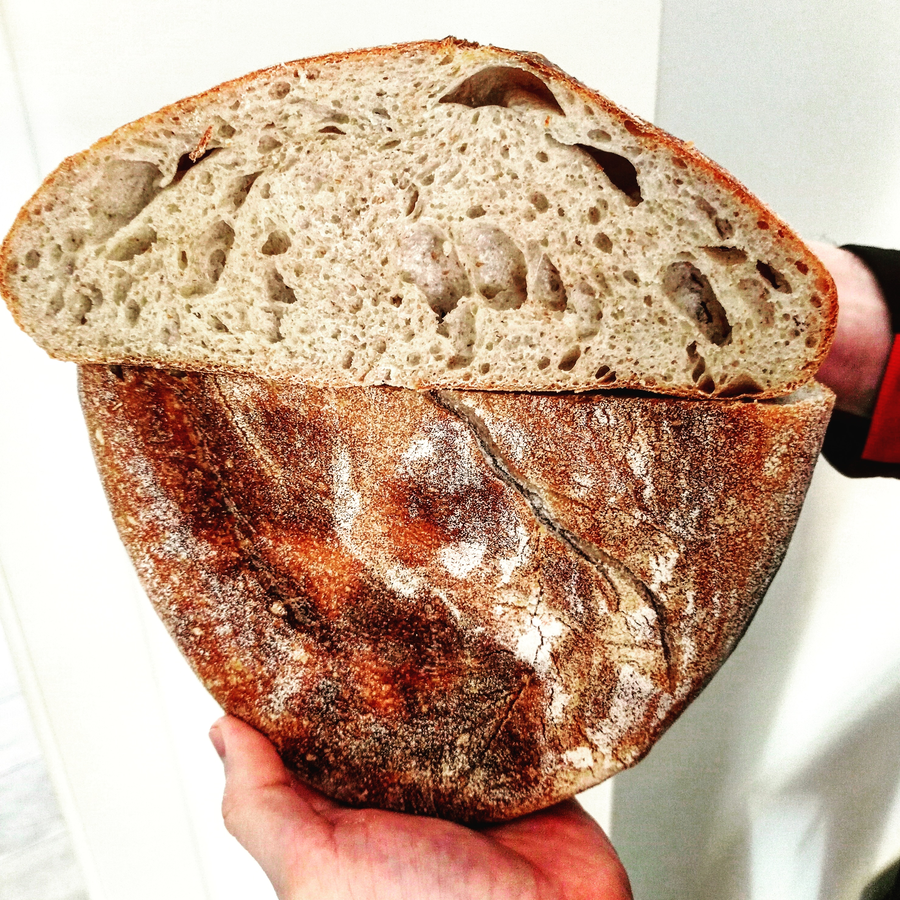

Pane di farina di manitoba

Ingredienti
Ingredienti
Di seguito riportiamo gli ingredienti per preparare un impasto soffice e leggero
- 500gr farina Manitoba
- 300gr farina 0
- 100gr lievito madre
- 720ml acqua
- 20gr sale
Procedimento
- Mescolare con un cucchiaio le farine e l'acqua
- Aggiungere il lievito e continuare ad impastare con le mani
- Dopo un'ora aggiungere il sale e iniziare a fare le prime pieghe, ripetendo il procedimento ogni due ore per 3/4 volte
- Lasciar lievitare in frigo per 24/48h
- Riscaldare il forno a 230° a forno statico e mettere già la teglia dentro in modo che si riscaldi
- Una volta che il forno è arrivato a temperatura, capovolgere l'impasto nella teglia, fare un taglio decorativo sulla superficie e far cuocere per 30/40 minuti fino a doratura